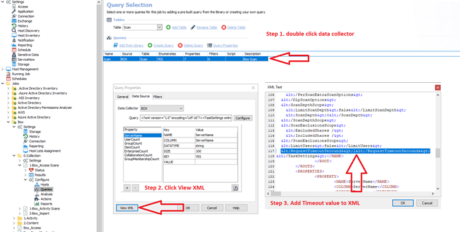

Summary:
BOX Access Scan Time Outs
Submitted by:
Justin Giemza
Cumulative List of fixes included since Service Pack:
None
Affected Versions:
10.0
Affected Module:
SA - DC - Box
Dev Ticket:
SAFS-19599
Resolved in Version:
DC/
DCBOX.dll 10.0.13.834
Private Assemblies/
Box.V2.dll 1.0.0.0
Stealthbits.StealthAUDIT.DataCollectors.Box.Common.dll 10.0.4.834
Stealthbits.StealthAUDIT.DataCollectors.Box.dll 10.68.834
Stealthbits.StealthAUDIT.DataCollectors.Box.dll.config
Stealthbits.StealthAUDIT.DataCollectors.Box.UI.dll 10.0.15.834
Stealthbits.StealthAUDIT.DataCollectors.Box.UI.dll.config
KB Type: Bug
Issue:
BOX Access Scan Time Outs. Dev team has added a timeout that can be modified in the data collector XML .
Instructions:
- Unblock the hotfix zip file in the windows property dialog if an unblock button exists there.
- Close all instances of StealthAUDIT (check task manager under processes for all users)
- Exit StealthAUDIT console
- Copy and replace files from the folders in this hotfix to the corresponding folders in SA Install dir.
- In StealthAUDIT job XML add
"1200
(timeout is in seconds example will be 20 minutes/1200 seconds)

https://downloads.stealthbits.com/access/files/SAHotFixes/10.0/SA_10.0_031.zip